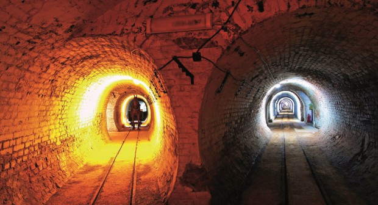

История на Перник.
История
От най-ранни времена Пернишката котловина е предоставяла благоприятни условия за живот. Тук е имало земя, годна за обработване, вода за пиене, просторни пасища, удобни места за строеж на жилища. Близките планини предоставят прекрасни условия за лов. От намерените археологични паметници може да се заключи, че първи прояви на живот в района са от 6 хиляди години преди новата ера. Селище има още от времето на тракийските царства. През римско време селището е заемало важно място по стратегическия път, свързващ Улпия Сердика (сега София) с Улпия Пауталия (сега Кюстендил).
Преди Средновековието
Най-ранната история на Перник започва още преди цели 8000 години. Първите сведения за поселищен живот в района на Перник датират от 6000 г. пр. Хр. (ранен неолит). За живялото тук тракийско племе агриани споменава още Тукидид, когато разказва за похода на одриския цар Ситалк срещу македоните през 429 г. пр. Хр. Други тракийски племена в областта били граеите и илеите. Техният основен град се наричал Адева (Adeβa), върху чийто развалини е построен Перник. Тези земи били крайните в неговата държавна организация. Богати археологически находки свидетелстват за тракийско селище от късния неолит. От това време е най-богатата в централнобалканската зона керамична колекция, която се пази в Историческия музей. Тук се съхранява и чудесна експозиция от релефи и скулптури, посветени на здравоносните божества Асклепий и Хигия, почитани в района заради наличието на много минерални извори.
На мястото на по-късната средновековна крепост са разкрити останки от римско селище, включително от няколко късноантични църкви. На самия връх на хълма е открита еднокорабна църква, построена върху по-стара сграда от II век и действала от края на IV век до края на VI век. На 30 – 40 метра северно от крепостните стени е открита друга еднокорабна църква от IV-VI век. На хълм на отстрещния бряг на Струма е открита трета църква от този период, сходна с двете при крепостта.
В късноантичната вила от 3 – 4 в. н.е. и възникналото върху развалините ѝ ранно-византийско селище, просъществувало до началото на 6 в. н.е. в квартал „Бела вода“ са установени костни останки от над 20 вида диви (ловни) и домашни животни, най-многобройни сред които са били тези на говедото (Bos taurus) и домашната свиня (Sus scrofa f. domestica). От птиците по данни на палеоорнитолога проф. Златозар Боев, най-многочислени са находките от домашна кокошка (Gallus gallus f. domestica). Те доказват практикуването на селективно птицевъдство с месна насоченост. [3]В античното селище Арбанас до Перник от 1 – 3 в. н.е. са открити останки от бухал (Bubo bubo), полска яребица (Perdix perdix), както и домашни гълъб и кокошка.
В България и Византия
По времето на кан Омуртаг селището влиза в пределите на българската държава и става гранична крепост. Крепостната стена върви по естествените очертания на платото на хълма Кракра, широка е над 2 m и обхваща над 4,5 ha. Главната порта е в североизточната част на крепостта, от нея започва главната улица. В нея са разположени административни, стопански, жилищни и религиозни сгради. При археологически разкопки са намерени много монети и печат на цар Петър (927 – 970 г.).

За пръв път през Средновековието селището е споменато в житието на Свети Иван Рилски – пустинножителят „отиде в Перник и се настани в место каменно близо до река, наречена Струма, и тук си направи свое покоище.“ Свети Иван Рилски е небесен покровител на българите, пазител на миньорите и покровител на града.
В началото на 11 век селището е непристъпна за византийците крепост, седалище на легендарния воевода Кракра Пернишки, играл важна роля по време на Първото българско царство. Днес тя е една от най-големите исторически забележителности на града. Българите се възползват от укрепеното място и в пролома на Струма изграждат една от най-мощните български твърдини – Перник. За пръв път това име се споменава през IX век. Легенди свързат името на града с това на славянския бог Перун. В края на 10 и началото на 11 век Перник е административен център на местния войвода Кракра Пернишки – „мъж, отличен във военното дело“ според византийските летописци Скилица и Кедрин, играл важна роля по време на Първата българска държава.

Особено голям е приносът на Кракра през 1004 г., когато той храбро защитава своята твърдина и спира настъплението на византийския император Василий II Българоубиец към Сердика. След продължителни бойни действия той отхвърля предложените му високи постове, нанася тежко поражение на византийските войски и ги принуждава да се оттеглят от неговата област. През 1016 г. Кракра Пернишки удържа нова, 88-дневна обсада и след многочислени загуби Василий II отново е принуден да се оттегли. Легендите за онова време твърдят, че кръвта от убитите византийските войни била толкова много, че дълги години червенеела по скалите в подножието на Пернишката крепост. Оттам дошло и названието на местността – Кървавото.
През 1017 г. Кракра Пернишки събира голяма войска, благодарение на своите дипломатически умения привлича на своя страна печенезите и с тези обединени сили се готви да нанесе удар по Византия, за да освободи земите между Дунав и Стара планина от византийските нашественици. Коварната политика на Константинопол обаче успява да подмами печенезите и те разтурят съюза. След смъртта на цар Иван-Владислав през 1018 г. Кракра счита по-нататъшната съпротива за излишна и с цел да запази живота на българите, се подчинява на византийците заедно с подвластните му 35 крепости. Славният живот на войводата е възпят през 1874 г. от Петко Рачов Славейков в поемата му „Кракра Пернишки“, която сюжетно е изградена върху някои действителни моменти от неговия живот. Днес Пернишката крепост е една от най-големите исторически забележителности на града.
Перник влиза в пределите на Второто българско царство през 1204 г., крепостта продължава да има своето важно стратегическо значение като център на административна област.
В Османската империя
Създаването на Османската империя и падането на България под османска власт (1396 г.) слага край на значението, което Перник има като крепост, вече не е и административен център. Неговият напредък се обуславя от природните богатства на околността.
При мирен труд и усилена работа и главно поради факта, че в околността не са се заселвали турци, населението успяло да изгради едно добро благосъстояние. В първите векове на османското владичество местното население се ползва със статут на войнуци (освободени са от някои райетски данъци и са смятани за „свободни поданици“ на султана). Особено е било развито скотовъдството. Според чешкия историк Константин Иречек, при своите нападения над Перник през 1690 г. граф Шенкендорф е отвел над 7 000 глави добитък. Това бедствие безсъмнено е накърнило жестоко икономическото състояние на местното население.
През 1869 г. по поръчение на османското правителство австрийският геолог Фердинанд Хохстетер извършва проучвания във връзка с проектираните строежи на железопътни линии в европейските предели на империята. Той проучва и Пернишката котловина, която описва като „Църковски кафяво-въглищен басейн при западните поли на Витоша“. Първото практическо използване на въглищата става през 1873 г. от италианската комисия, която прокарвала трасето на ж.п. линията София – Кюстендил. В работата по прокарване на трасето участва и Иван Вазов.
В архивите на Регионалния исторически музей в Перник са запазени имената на повече от 30 опълченци, загинали за освобождението на България. На 6 януари 1878 г. кавказката бригада на генерал Гурко, движеща се в посока Кюстендил и Горна Джумая (дн. Благоевград) освобождава тогавашното село Перник и околните селища.
След Освобождението
Освобождението заварва Перник като малко земеделско и скотовъдно селище с население около 1000 души, съставено от отделни махали – Средна махала, Варош и Пешова махала, разположени по двата бряга на Струма и в подножието на старата крепост. Изключителен тласък за бъдещото развитие на селището дават каменните въглища, лежащи в недрата на Пернишката котловина.
Най-новата история на Перник започва през миналия век с разработката на богатите въглищни залежи в района. Според някои учени въглищата са известни още от Х-XI век. Преди да започне промишлената им експлоатация, местното население копае с кирки и лопати и пренася с каруци и колички „чернийо камък“. Бързото развитие на Перник е свързано с големите доставки на въглища за столицата, предназначени за битови нужди и за железопътния транспорт. Дотогава за железниците, за речните и морските кораби се доставят въглища чак от Кардиф, Великобритания.
През 1878 г. руски войници копаят въглища край с. Мошино за отопление на своите казарми. През 1879 г. правителството прави опит да експлоатира въглищните залежи, но поради липсата на подготвени кадри начинанието се проваля.
През 1891 г. са извършени проучвания на залежите край с. Перник. През юли 1891 г. Министерството на финансите издава заповед за експлоатацията им, като проектът за това е изготвен от инженерите Димитър Юрданов и Кънчо Садаков. Под тяхно ръководство на 17 август 1891 г. 114 работници започват добив на въглища в 2 местности около село Перник – Кулата (по-известна като „Старите рудници“) и Бели брег. До края на годината са добити 8429 тона въглища.
С построяването на първите миньорски квартали по терасите на р. Струма се слага началото на рударското селище Перник. Няколко десетилетия той е енергийното сърце на България.
В началото на 20 век
От 1892 до 1926 г. Перник бележи един от най-големите за България прирасти на население – от 1 413 на 12 296 души. Експлоатацията на въглищата дава тласък за развитието на Перник. За първи път в България с монтирането през 1895 г. на минната сепарация и нужната за нея електрическа станция пламва електрическа крушка за осветление. През 1893 г. е открита гара Перник от ж.п. линията София – Кюстендил. Разраства се строителството на минни предприятия – ТЕЦ за 3 000 V, открита през 1918 г., ТЕЦ за 6 000 V (по-късно ТЕЦ „Перник“) през 1929 г., което позволява да започне електрифицирането на Перник и околните селища.
С бързи темпове се благоустроява селището (канализиране и водоснабдяване), строят се административни сгради – Общинско управление, Дирекция на минната управа и др., жилищни квартали – Инженерен, Монте Карло, Твърди ливади и др.
Разгръща се обществен и културен живот – през 1919 г. е открит Работнически театър, създават се просветни и землячески дружества. Създадена е санитарна служба, през 1925 г. започва своето действие професионална пожарна команда. Перник добива облика на индустриално селище, подобно на много миньорски селища в Западна Европа. На 26 юни 1929 г. с Указ № 402 на цар Борис III Перник е обявен за град.
Развитието на Перник като минно селище дава своето отражение на неговата архитектура. Строежът на Минната църква започва през 1910 г. по идея на тогавашния директор на мината инж. Иван Симеонов, а нейното освещаване е извършено от епископ Варлаам в деня на минния празник 19 октомври 1920 г. Стенописите в храма са дело на художниците Никола Маринов, Дечко Узунов и Александър Поплилов. Над входа на храма има прекрасна многоцветна мозайка с лика на св. Иван Рилски, който е патрон на мината. 19 октомври е ден на града от 1980-те години.
1930-1940-те години
Превръщането на Перник в индустриално селище води до разкриването на нови промишлени предприятия. През 1931 г. с български и белгийски капитали започна строителството на фабрика „Кристал“ за производство на плоска и куха стъклария, през 1933 г. започва изграждането на първото в страната предприятие за валцувани метали „Български железни заводи“, оборудвано с електродъгови металургични пещи, фабрика за сушене на плодове и зеленчуци, която през 1951 г. прераства в единствения завод на Балканите за производство на пектин.
Срещу църквата е сградата на минната дирекция. Построена е през 1932 г. по проект на архитектите Коста Николов и Илия Попов. Външно е оформена в неокласически маниер, а вътре се забелязват влияния на ранна готика. Часовниковата кула дълги години властва по височина над целия град. Сградата е разгърната в правоъгълна форма около вътрешен двор, който е разделен на 2 от централна част, в която са поместени парадното стълбище и тържествена зала. Леко изнесеният сводест главен вход с врати от ковано желязо и аркадите от бял камък целят да подчертаят не само характера на сградата, но и да служат при празненства. Часовниковият механизъм на кулата е от система „Бреге“. Той е свързан с още 30 по-малки стенни часовника вътре в сградата и работи на електромеханичен принцип. Централното фоайе, централното стълбище и крайстълбищните кулоари са облицовани с пъстроцветни италиански мрамори и полиран гранит, а коридорите – с доставен от Чехия декоративен фаянс.